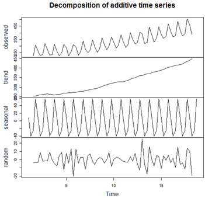
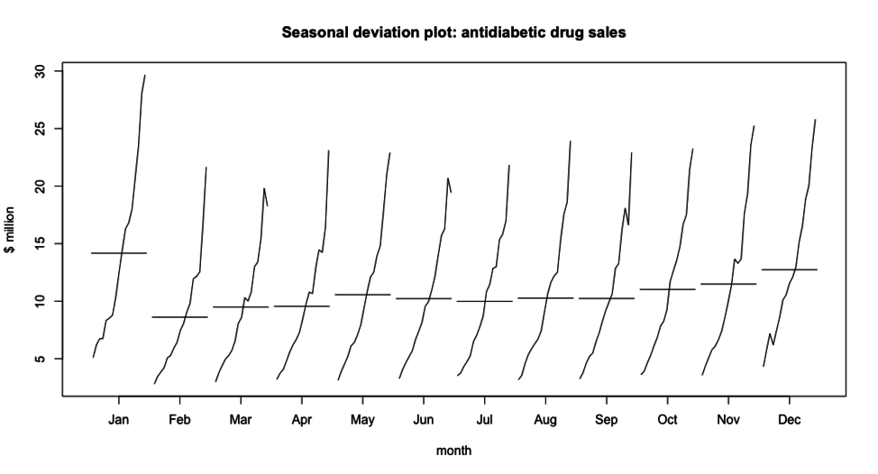
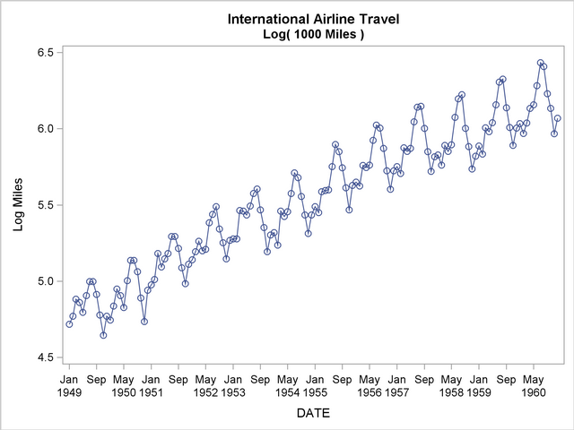

- Decomposing a Time Series.
- Extract Random, Seasonal and Trend
- Display Difference between each score and the average of a specific period
- Draw curves based on moving average
- Draw out the departures from the moving average
- Plot adjusted variation.
- Using seasonal subseries chart.
- 
- 
- Visualizing Indexes.
- Find a score as index origin and then plot the graphics about percentage change
which is ((Each score-Index origin)/Index origin)*100
- Using Logs.
- Visualizing change rate using logarithmic scale, which can be achieved by using log transformation
- 